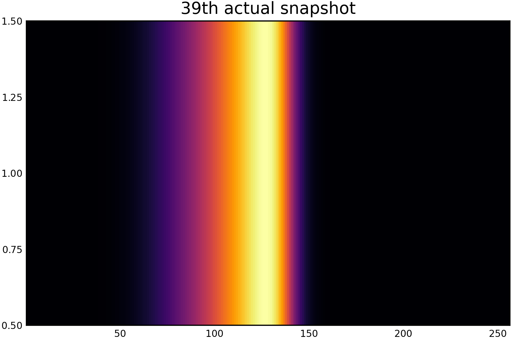
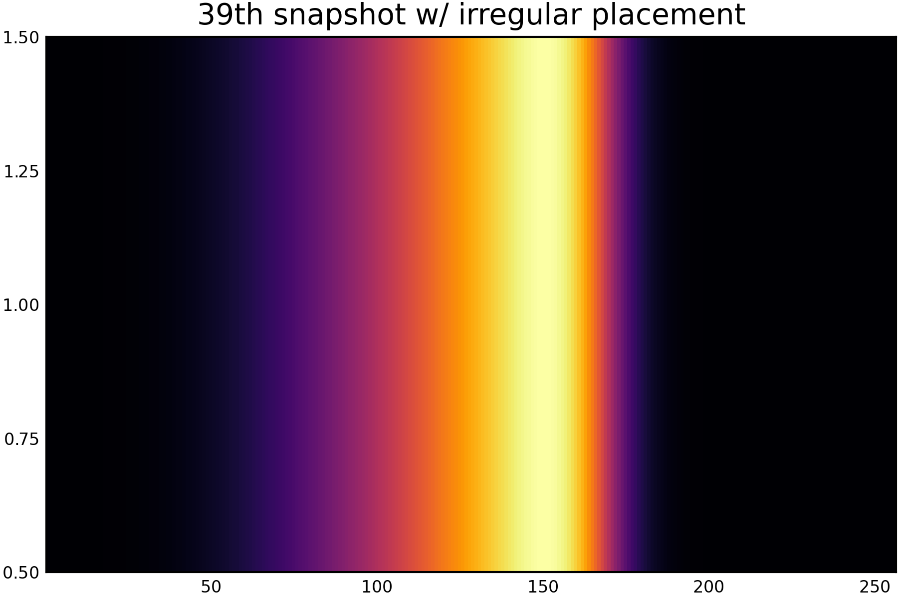
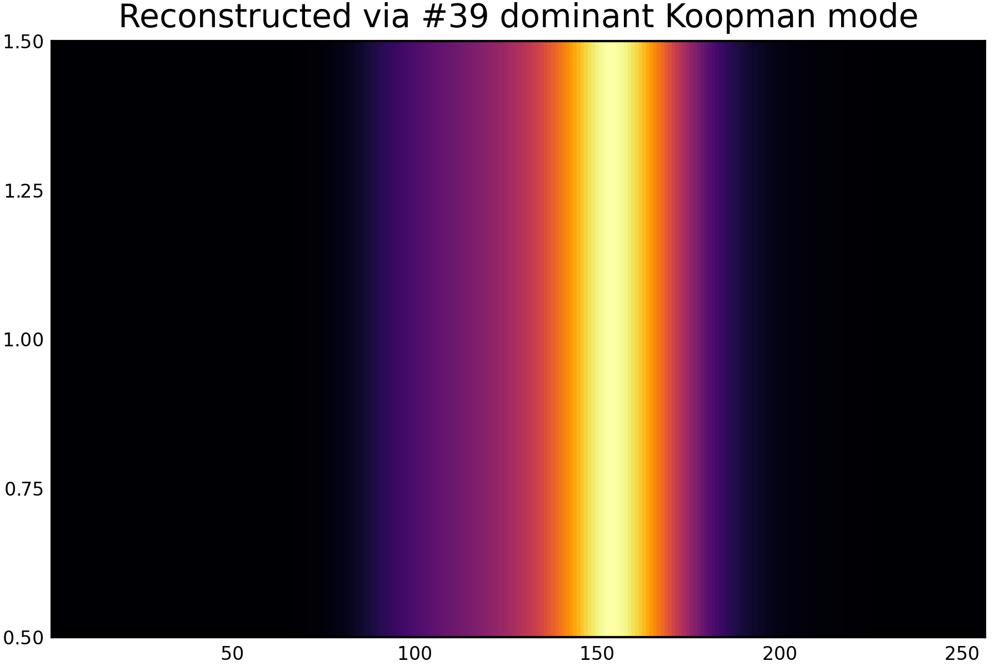
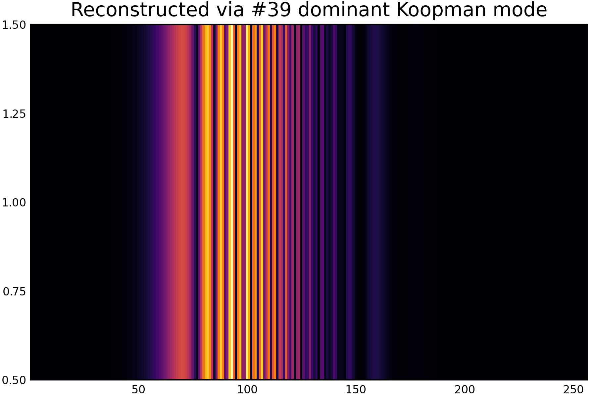

Kernel Dynamic Mode Decomposition for Sparse Reconstruction of Closable Koopman Operators
This paper develops a new reproducing kernel Hilbert space from the Laplacian kernel and studies the closability of Koopman operators on that space, providing a principled foundation for kernel dynamic mode decomposition and spatial–temporal reconstruction.
This paper develops a new RKHS from the Laplacian kernel, studies the closability of Koopman operators on that space, and connects the theory directly to sparse spatial–temporal reconstruction through Kernel EDMD.
Why this problem matters
Kernel Koopman analysis needs more than a good kernel — it needs a well-behaved operator.
Data-driven Koopman analysis approximates nonlinear dynamics through a linear operator acting on observables. In kernel-based methods, those observables are determined implicitly by a reproducing kernel Hilbert space. But this raises a deep operator-theoretic question: is the Koopman operator actually closable on the chosen RKHS? Without closability, spectral analysis and mode decomposition lose mathematical footing. This paper addresses that issue directly by constructing a Laplacian-kernel-induced RKHS where closability can be studied rigorously.
Core idea
Build the function space first, then study the operator inside it.
The central move in this work is not just to apply a kernel method, but to construct an RKHS rich enough for Koopman operators to admit a closable realization. The Laplacian kernel becomes more than a similarity measure: it defines the ambient function space in which Kernel EDMD, Koopman eigen-analysis, and mode reconstruction can be justified from both operator theory and data-driven science.
What is new here?
The novelty is not simply the use of a Laplacian kernel. The key advance is the construction of an RKHS in which the Koopman operator admits a closable realization, allowing kernel EDMD, Koopman eigen-analysis, and mode reconstruction to be justified within one coherent framework.
Method overview
A single workflow figure captures the paper’s full logic.
Starting from irregularly sampled data, the Laplacian kernel determines the dictionary of observables, Kernel EDMD approximates the Koopman operator in the induced RKHS, Koopman eigenvalues describe temporal behavior, and dominant modes reconstruct spatial–temporal structure.
Pipeline of the proposed framework: irregular time sampling, Laplacian-kernel dictionary construction, data matrix formation for Lap-KeDMD, Koopman eigen-analysis, and reconstruction of spatial–temporal modes.
Theoretical foundations
Key mathematical results behind the method.
New reproducing kernel construction
A new RKHS is constructed through a Laplacian-kernel embedding, providing
the functional space in which the Koopman operator can be analyzed.
Laplacian kernel induced RKHS
The Laplacian kernel determines the observable dictionary and induces a
rich RKHS suitable for kernel dynamic mode decomposition.
Closability of Koopman operators
The Koopman operator is shown to admit a closable realization on this RKHS,
enabling rigorous spectral analysis and spatial–temporal reconstruction.
From data to modes
From irregular snapshots to Koopman-guided reconstruction.
The reconstruction pipeline begins with sparse or irregularly sampled observations of a dynamical system.
These snapshots are lifted into an implicit dictionary of observables determined by the Laplacian kernel,
which defines the associated reproducing kernel Hilbert space.
1. Sparse and irregular observations
Real dynamical systems are often observed through incomplete, irregular, or sparsely sampled data.
The starting point of the framework is therefore not a clean time series, but a partial collection of snapshots.
2. Kernel-defined observables
The Laplacian kernel determines the observable dictionary implicitly.
This avoids hand-crafted basis selection while placing the dynamics inside a structured RKHS.
3. Koopman approximation in RKHS
Kernel Extended Dynamic Mode Decomposition approximates the Koopman operator on this space,
allowing spectral information to be extracted directly from data.
4. Reconstruction of dominant modes
Koopman eigenvalues and associated modes reveal the dominant spatial–temporal structures,
enabling reconstruction of coherent dynamics from sparse measurements.
Why closability matters
Closability is what turns a kernel construction into a meaningful Koopman framework.
In kernel-based Koopman analysis, the key issue is not only whether an RKHS can be defined, but whether the Koopman operator behaves as a mathematically meaningful operator on that space. Closability is the property that makes this possible. It ensures that limits of observables remain compatible with the operator action, giving a rigorous foundation for spectral analysis, mode decomposition, and reconstruction.
The main contribution of this paper is to show that the Laplacian-kernel-induced RKHS is rich enough to support this structure, allowing kernel dynamic mode decomposition to be interpreted not merely as a numerical trick, but as an operator-theoretically grounded reconstruction method.
Main results
Mathematical contributions with direct reconstruction consequences.
New RKHS construction
A measure-theoretic embedding of the Laplacian kernel gives rise to a new reproducing kernel Hilbert space tailored to this operator-theoretic setting.
Closability of Koopman operators
The paper studies the closability of Koopman operators on the constructed RKHS, addressing a central issue in kernel-based Koopman analysis.
Kernel DMD reconstruction
Kernel EDMD with the Laplacian kernel reconstructs dominant spatial–temporal modes across diverse dynamical systems.
Theory meets data
The work links operator theory, Koopman spectral measure, and practical data-driven mode decomposition in one coherent framework.
Main results
Experimental datasets
The Laplacian Kernel EDMD method is evaluated across a diverse set of
dynamical systems including nonlinear PDEs, chaotic ODEs, and real-world
spatio-temporal datasets.
#
Dataset
Dataset Nature
PDE Systems
1
🌊 Burgers' Equation
Non-linear PDE
2
🌪 Fluid Flow Past Cylinder
Navier–Stokes PDE
Chaotic ODE Systems
3
🌀 Duffing Oscillator
Chaotic (2-D) ODE
5
🌀 Lorenz Attractor (1963)
Chaotic (3-D) ODE
6
🌀 Rössler Attractor
Chaotic (3-D) ODE
Real-World Spatio-Temporal Data
4
🚗 Seattle I-5 Freeway Traffic
Non-deterministic System
7
🌍 NOAA Sea Surface Temperature Anomaly
Non-deterministic System
Spatial–temporal structures recovered from sparse observations.
We reconstruct spatial fields from sparse irregular observations using Kernel EDMD. When the Laplacian kernel is used, the dominant Koopman mode accurately recovers the coherent spatial structure of the system. In contrast, reconstruction using a Gaussian radial basis function (GRBF) kernel introduces spurious oscillatory artifacts and fails to capture the true spatial field. This experiment highlights the importance of the underlying RKHS: the Laplacian kernel induces a function space where the Koopman operator admits favorable operator-theoretic properties, enabling stable Koopman spectral reconstruction.
For all figures, the horizontal axis represents the spatial coordinate, the color represents the field intensity and the field exhibits a localized coherent structure (the bright region).

Burger's Equation-39th Data Snapshot before Irregualrity and Sparsity Sampling.

Burger's Equation-39th Data Snapshot after Irregualrity and Sparsity Sampling.

Burger's Equation-39th Data Snapshot Reconstruction by Laplacian Kernel-EDMD.

Burger's Equation-39th Data Snapshot Reconstruction by GRBF-EDMD (inferior performance).
Despite irregular and sparse sampling, the dominant Koopman mode successfully reconstructs the coherent spatial structure of the Burger's Equation. This highlights the robustness of the Laplacian kernel RKHS for Koopman spectral reconstruction.
Comparison to prior work
The point is not just to use a kernel — it is to justify the operator in the kernel space.
Framework
What it provides
Limitation / new advantage
Classical DMD
Mode decomposition in linear observable settings
Limited expressive power for nonlinear dynamics
Kernel EDMD
Nonlinear feature lifting through an implicit dictionary
Operator-theoretic behavior on the RKHS is often left unclear
This work
Laplacian-kernel RKHS with Koopman analysis and reconstruction
Studies closability directly and provides theoretical grounding for kernel mode decomposition
Paper and citation
Read the full paper and cite it.
This page is a visual and conceptual companion to the paper. For proofs, full statements, and technical details, please read the arXiv manuscript.